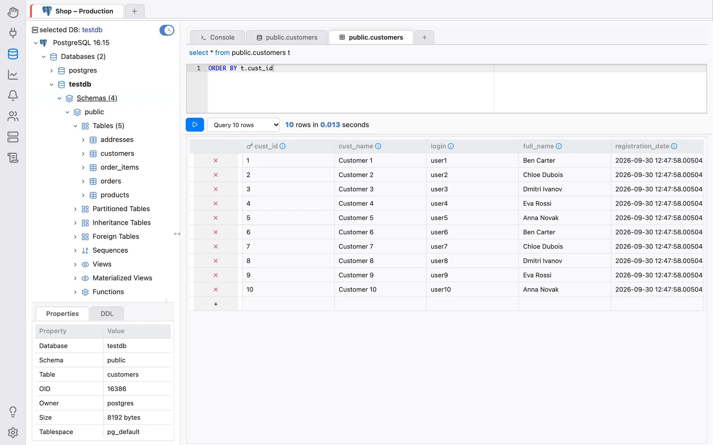
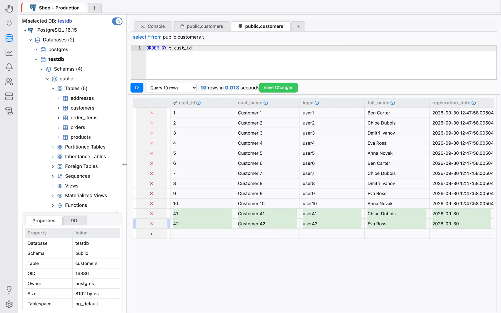
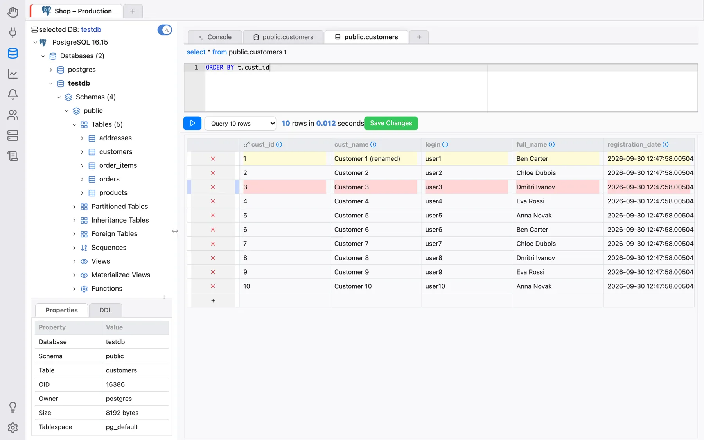
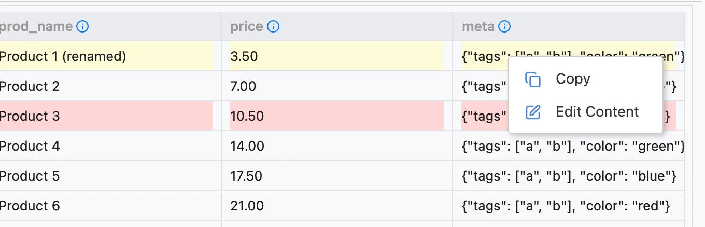
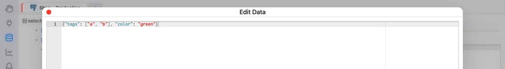
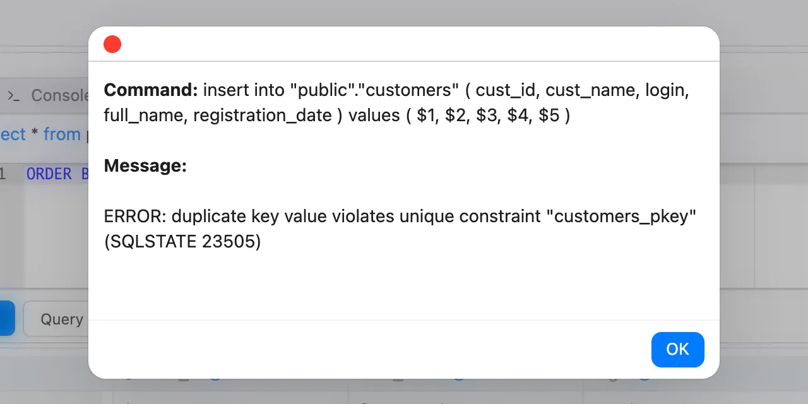

Managing Table Data
The tool allows us to edit records contained in tables through a very simple and intuitive interface. Given that only a few DBMS automatically provide a unique identifier for table records, we opted to allow data editing and removal only for tables that have a primary key. Tables that do not have it can only receive new records.
To access the record editing interface, right click the table node and select the action Data Actions > Edit Data:


The Edit Data tab has a small SQL editor for an optional filter and ordering clause,
appended to the query that loads the records — for example where t.cust_id > 10 order by
t.cust_name (the table is available under the alias t) — a drop-down that limits
how many records are loaded (Query 10 rows, Query 100 rows or Query 1000
rows) and a Run button that (re)loads the grid. The records grid has column names
and data types. Columns that belong to the primary key have a key icon next to their names. If
the table has no primary key, OmniDB warns Table has no primary key, existing rows will be
read only. — you can still add new rows.
Changes are not written immediately: edit, add and mark rows as needed, then click Save Changes, which appears as soon as there is something to save. The first column of each row holds its row action: clicking the × there marks the row for deletion (click again to undo), or removes a new, not yet saved row.
The row of the grid that have the symbol + is the row to add new records. Let
us insert some records in the table customers:

After saving, the records will be inserted and can be edited (only because this table has a primary key). Let’s change the cust_name of some of the existing records and, at the same time, let’s remove one of the rows:

Tables can have fields with values represented by very long strings. To help edit these fields, right-click the cell and choose Edit Content: a larger editor opens (with syntax highlighting for JSON/JSONB and XML columns), and Save writes the value back into the grid. The same menu has Copy:


The interface detects errors that may occur during operations related to
records. To demonstrate, let us insert two records with existing cust_id
(primary key):

It shows which commands tried to be executed and the respective errors.